Code and notebook on GitHub · Colab-ready notebook (.ipynb)
Lakshay · October 2026
The purpose of this work was to replicate the refusal-direction result of Arditi et al. (2024) on two small chat models, Qwen1.5-1.8B-Chat and Gemma-2B-it, and to get a deeper understanding of the mechanism of refusal: not only that a refusal direction exists, but which components, at which positions and depths, produce a refusal, and what an adversarial suffix does to them.
This report is also a record of how the work went. I want to be transparent about how iterative the research process was: where I got stuck, where I spent extra time when I should not have, and where I felt frustrated, while understanding that research taste comes with time and practice. These moments are part of the post, not only the findings, and they appear in the passages headed "Where I got stuck" and in the table of corrections near the end. I hope it helps junior researchers like me see that this is part of the process.
Framework. For each claim I tried to ask three questions. What are the implications of the hypothesis, meaning what else must be true if it holds? What are the alternate ways it could be true, or be an artifact of how I measured it? And so what: what would change in how we understand refusal if it holds? The tests below are chosen for the first question, the caveat passages ("what these tests do not show") answer the second, and the themes section is where I try to answer the third.
On two chat models, refusal is decided at the template tokens and the last token, in a middle band of depth where attention and MLP are both needed, and the adversarial suffix breaks it differently in each model. I replicated the refusal-direction setup of Arditi et al. (2024) on Qwen1.5-1.8B-Chat and Gemma-2B-it, then used activation patching to ask how the behaviour is computed rather than only where a direction lives.
What I claim, each scoped to these two models:
Redundant decision sites. The five chat-template tokens before the response and the last token each carry enough information to produce refusal, and removing both is needed to remove it.
A mid-depth band. Attention and MLP are both needed in roughly the 50–75% depth range. After it, MLP carries the behaviour and attention fades: a sharp cutoff on Gemma, a taper on Qwen.
Early instruction work. Instruction-position computation is finished by about half depth, and layer-0 MLP behaves like a token lookup for frequent tokens. On Gemma, pasting the full residual at the instruction positions restores the whole effect up to layer 6 and nothing after layer 9 to 10 (Checks run after the first draft).
Order of dependence. The tail MLP inherits what the tail attention delivered, not the reverse.
The suffix is model-specific. Qwen loses push through the tail-last route; Gemma loses it from the instruction source and a random suffix is nearly inert.
What I do not claim: a circuit, any head-level result, or anything about models beyond these two. Head identities are left out on purpose because the head ranking changed with the scoring method.
How to read this report: the passages headed "Where I got stuck" sit next to the findings they changed. The dead ends are part of the result, because several of the cleaner-looking conclusions came from first misreading a test.
Models. Qwen1.5-1.8B-Chat (24 layers, multi-head attention, RoPE) and Gemma-2B-it (18 layers, one shared key/value head, RoPE, GeGLU, embeddings scaled by the square root of the model width).
Behaviour metric. At the last token, the mean logit of the refusal tokens minus the mean logit of the others (Gemma: "I"; Qwen: "I" and "As"). It is a first-token proxy, not a generated refusal.
Paired prompts. Harmful and harmless prompts are matched in length so positions line up. The five chat-template tokens before the response (the "tail") are identical in both prompts, so any harmful-versus-harmless difference at those positions must have arrived through attention. I explored on a discover split and confirmed on a held-out eval split (Qwen 41 / 42 pairs, Gemma 39 / 39).
Noising and denoising. Noising runs the harmful prompt and pastes in harmless activations: it tests whether a component is necessary. Denoising runs the harmless prompt and pastes in harmful activations: it tests whether it is sufficient. Every effect is (patched − clean) / (corrupt − clean), so 1 means the whole behaviour moved. These are total effects: everything downstream of the patch is allowed to respond. Component patches paste attention and MLP outputs, not the residual stream: the residual also contains the embedding, which these patches leave in place. For the instruction positions on Gemma that turned out to matter (Checks run after the first draft).
Direction. Difference of means at post-instruction positions, chosen by the bypass-score filter of the paper. The choice differs from the authors' (Gemma: position −1, layer 12 against their −2, layer 10, cosine 0.59), so every number measured along that direction is conditional on it. The patching and bypass results do not depend on it.
Suffix. Qwen: the stored suffix from the paper, which its authors found with GCG. Gemma: a 20-token suffix I found with GCG. Controls: a random 20-token suffix, a position-shift-only control.
Process disclosure. I used Claude to restructure the notebook into a config-driven version that runs both models, and to review code and wording. The experiments, the readings and the claims are mine, and several of Claude's readings were corrected by me (see the dead-ends section).
Fig 1a · Qwen1.5-1.8B-Chat
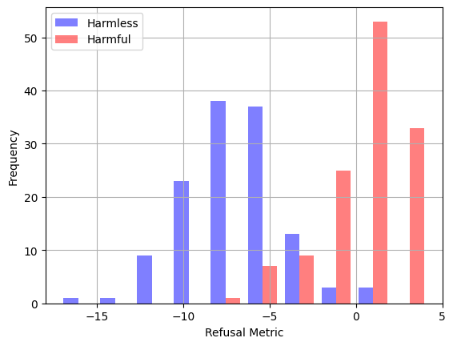
Fig 1b · Gemma-2B-it
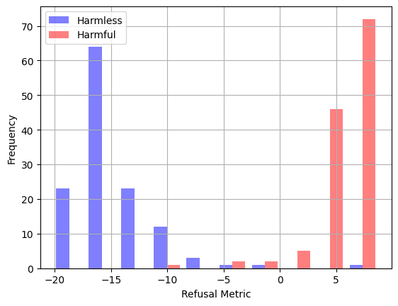
Figure 1. Refusal metric on the training prompts, harmful against harmless: (a) Qwen, (b) Gemma. The position groups are drawn in Figure A.
I started with cheap descriptive tools to decide where to intervene: the cosine of activations with the refusal direction per layer, each component's output projected on that direction ("push"), a per-head scan for the heads with the largest push, and direct logit attribution (A1: each component's last-token output through the final norm and unembedding, summing to the real score).
These tools are fast and they tell you where to look. They cannot tell you what matters, for three reasons I only fully accepted late:
Projection is not importance. The direction is defined at one layer, so the projection at later layers measures readout, not push towards refusal.
Heads found this way are partly chosen by construction. They can only be found below the direction layer, so "important heads sit at layers X–Y" is partly circular.
A1 sees only direct effects. A null before the late layers means "upstream", not "irrelevant".
What A1 showed (Fig 2): on Qwen the direct writers are spread over layers 15–23 with no layer above about 18% of the gap. On Gemma two MLPs dominate (layer 14 about +0.48 and layer 15 about +0.24 of the gap), but the plain attribution gives layer-0 attention −0.78 and the embedding +0.94. Neither is a write: the embedding at the last position is the same token in both runs, so its content difference is exactly zero, and the whole share is the final norm dividing each run by its own scale. Split into a content term and a scale term (Table 4), layer-0 attention's content share is +0.03 and the late MLPs carry the content. On Qwen the split changes almost nothing (content 0.96 and 0.98 of the gap, scale 0.03 and 0.02).
Method sensitivity. On Gemma the paper's raw ranking put five layer-0 heads in the top eight. A harmless-prompt control showed they write an almost prompt-independent vector (projection 3.65 / 3.65 / 3.58 with no suffix, adversarial and random suffix). Ranking by harmful minus harmless projection (Fig 3c) removes them and gives a different top eight. I report this as a result: head nomination depends on the scoring rule, which is why I make no head-level claims.
Fig 2a · Qwen1.5-1.8B-Chat
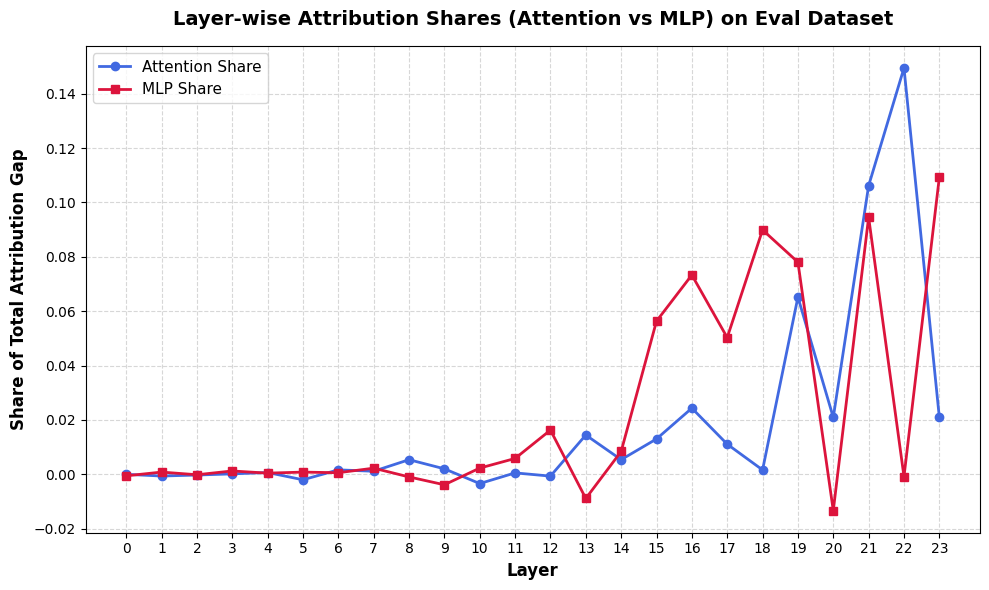
Fig 2b · Gemma-2B-it
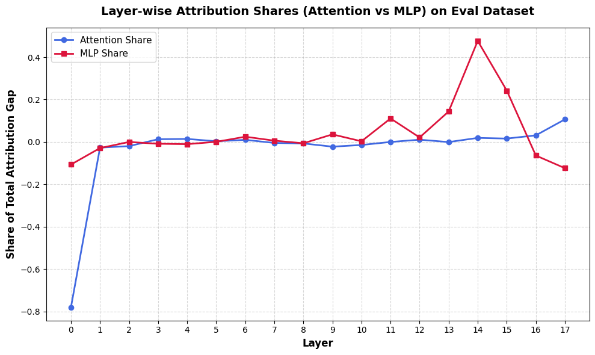
Figure 2. A1 direct logit attribution: share of the harmful-minus-harmless gap written by each layer's attention and MLP, eval split. (a) Qwen, (b) Gemma. Gemma's layer-0 attention bar is a final-norm scale effect, not a write (Table 4).
Fig 3a · Qwen1.5-1.8B-Chat
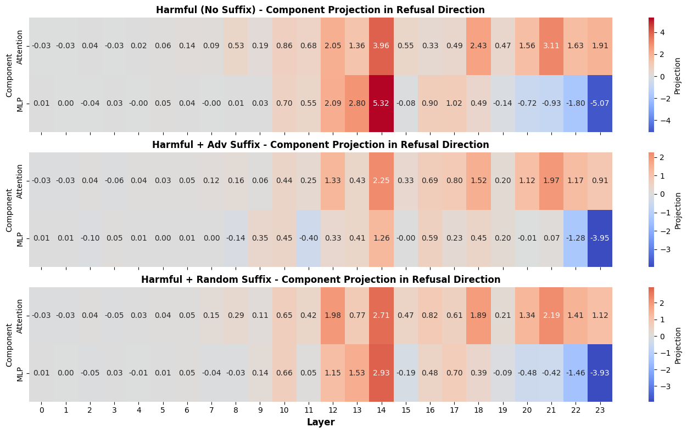
Fig 3b · Gemma-2B-it
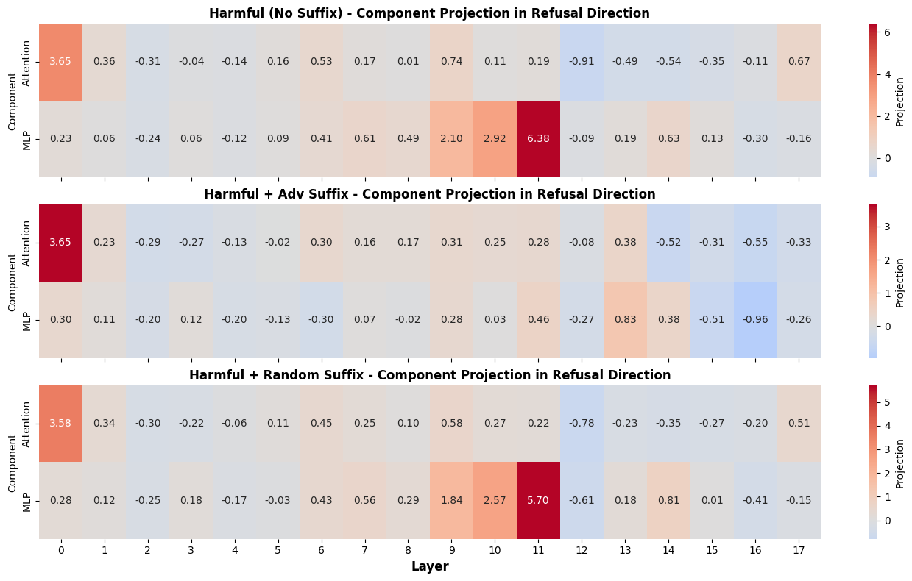
Fig 3c · Gemma-2B-it, per head
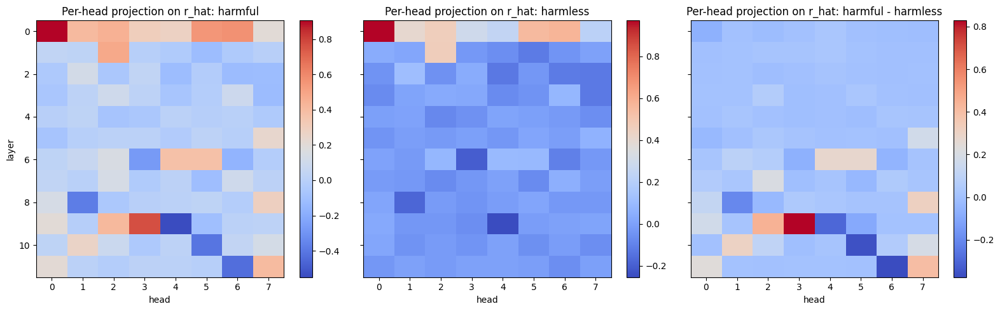
Figure 3. Component projection on the refusal direction by layer (attention above, MLP below) for no suffix, adversarial suffix and random suffix: (a) Qwen, (b) Gemma. (c) Gemma per-head projection for harmful prompts, harmless prompts and their difference; the layer-0 and layer-1 heads that are strong in the first two panels vanish in the difference.
The larger goal of this group of experiments was to find the circuit: the set of components, positions and layers that together produce refusal. I did not get there, and the claims in this report are the themes that survived the tests, not a circuit. Each test is introduced with the question it asks and with what I would expect to see if the claim were wrong.
The causal tools are single-component patching (A2: one layer's attention or MLP, by position group), joint patching (a whole band of layers at once) and 3-layer window sweeps. The position groups are the instruction tokens, the five template-tail tokens, the last token, all tokens, and the tail without its last token (Figure A).
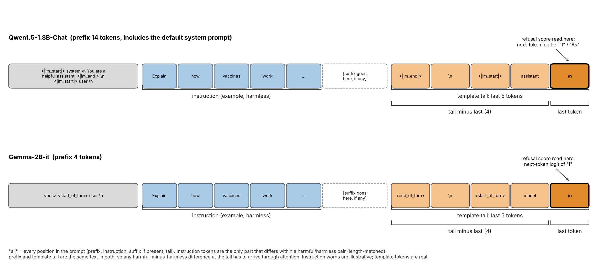
Figure A. A tokenised prompt for each model with the position groups marked: prefix (not a patching group on its own), instruction tokens, the slot where an adversarial suffix is inserted, the five-token template tail, and its last token, where the refusal score is read. Groups used in the patching tests: instruction, tail, last token, tail minus last, all. Instruction words are illustrative; the template and prefix tokens are the real ones.
A noising and a denoising number together say more than either alone:
| Noising (necessary) | Denoising (sufficient) | Reading |
|---|---|---|
| high | high | necessary and sufficient |
| high | low | necessary, not sufficient (needs a partner: AND) |
| low | high | sufficient but replaceable (backup: OR) |
| low | low | diffuse, or saturated |
Two more rules took me several wrong readings to get straight. In noising, a joint effect above the sum of the singles means redundancy (each part is compensated alone). In denoising it means the parts need each other. And a sum above 1 is saturation, so sums of singles are descriptive, not a test.
Why joint patching at all: single components hide redundancy. A component that looks unimportant alone may be one of several that each suffice. Joint patching and the window sweep find the stage, the band where necessity and sufficiency are both high.
Fig 4a · Qwen1.5-1.8B-Chat
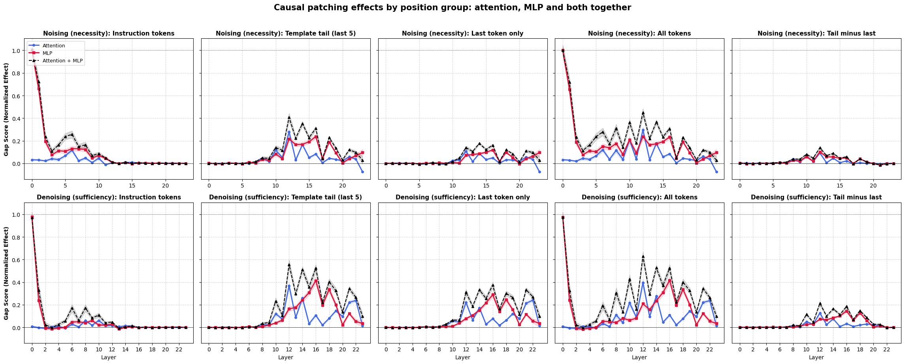
Fig 4b · Gemma-2B-it
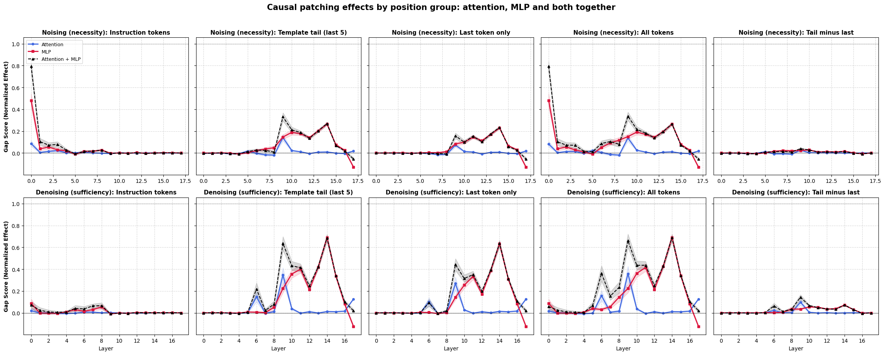
Figure 4. Single-layer noising (top row) and denoising (bottom row) of attention, MLP and both, by position group, eval split: (a) Qwen, (b) Gemma.
Where I got stuck.
I first described A2 as isolating a component from upstream and downstream. It does not: the patch keeps the upstream run and lets everything downstream respond, so it measures the total effect. A1 measures only the direct one, so the two can differ in either direction.
1. Refusal has redundant decision sites. In the middle band, the whole template tail (noising / denoising, attention plus MLP) accounts for essentially all of the behaviour. The last token alone is sufficient but only partly necessary, and the four tail tokens before it are about half sufficient and barely necessary. Removing both together is what removes it.
| Position group | Qwen (layers 12–18) | Gemma (layers 9–14) |
|---|---|---|
| Whole tail | 0.99 / 1.02 | 0.89 / 1.01 |
| Last token only | 0.61 / 0.96 | 0.42 / 0.93 |
| Tail minus last token | 0.19 / 0.52 | 0.11 / 0.46 |
The tail is made of identical template tokens, so the harmful signal that the tail copies must have come through attention from the instruction. That is the structural statement I expect to travel to other chat models: the template tokens act as a second place where the decision is held.
2. There is a mid-depth band, and attention hands over to MLP. Tail attention is needed through the gate; after it the MLP carries the behaviour. The evidence is the bypass test, explained next.
How the bypass test works. Start from a denoising patch: paste the instruction positions' attention and MLP outputs from the harmful run into the harmless run. That moves the harmless run's refusal score towards the harmful one, and the size of the move is the "effect without a block". Now repeat the patch, but in one block of layers freeze the outputs of the tail positions at their values from the clean (harmless) run. Whatever the tail would have computed in that block from the instruction's information is removed. Survival is the effect with the block frozen divided by the effect without it.
What the numbers mean. 1 means freezing the block changes nothing: the instruction's effect does not need that block. 0 means the whole effect is gone: the block sits on the only route from the instruction to the behaviour. A value between the two is a partial route, so 0.72 means about a quarter of the effect was lost. Values below 0 or above 1 are noise, and the ratio is not meaningful at all when the effect without a block is itself close to zero. Reading the table: survival near 0 for "Attention in the gate" says that without tail attention in those layers the instruction's effect does not reach the output; survival near 1 for "Attention after the gate" says late attention is not on the route. One control: freezing all attention must give exactly 0, because the instruction's information can only reach the tail through attention.
Survival of the instruction's effect when a block of the tail's outputs is frozen at the clean values (discover / eval):
| Frozen block | Qwen | Gemma |
|---|---|---|
| Attention in the gate | −0.01 / 0.10 (layers 10–14) | −0.07 / −0.01 (layers 6–11) |
| Attention after the gate | 0.72 / 0.78 (layers 15–19) | 0.96 / 0.94 (layers 12–16) |
| MLP after the gate | 0.30 / 0.30 (layers 15–19) | 0.03 / 0.03 (layers 12–16) |
Gemma shows a cutoff: attention after the gate is dispensable. Qwen shows a taper: late attention still contributes about a quarter, and last-token attention in layers 19–23 is sufficient (denoising 0.66) though barely necessary (0.14). A natural account is that an MLP sees only its own position's residual, so once the information has been moved to the last token nothing more needs routing. On Gemma the last token's own outputs in the band are 0.93 sufficient. I flag this as an account, not a result: a cross-model test is described at the end.
3. Instruction positions finish early; layer-0 MLP is a lookup. Effects at instruction positions end by about half depth. Layer-0 MLP output is almost determined by token identity (R² by token 0.93 on Gemma against a shuffled null of 0.21; Qwen 0.96–0.98), and replacing it with the token's own mean changes nothing. Two limits: it covers only frequent tokens (about 61% of positions), and the effect is smaller on Gemma (paired replacement −0.51 against −1.02 on Qwen). One caveat for Gemma: component patches at the instruction positions that include layer 0 or 1 outputs, without the embedding, are not valid (see Checks run after the first draft), so the first windows of Fig 5b and the layer-0 and layer-1 bars of the single-layer patches should be read with that in mind. On Qwen the outputs-only and embedding-included versions differ by at most 0.03 in the cumulative test (Table 5b), so I leave Fig 5a as it is.
4. The tail MLP inherits from the tail attention. In a suffix run, pasting the clean tail attention restores the MLP push (Qwen 0.86, Gemma 0.98) and most of the score (0.86 and 0.81). Pasting the clean MLP restores the MLP but not the attention (attention −0.24 on Qwen, −0.84 on Gemma) and less of the score (0.51 and 0.67).
Fig 5a · Qwen1.5-1.8B-Chat
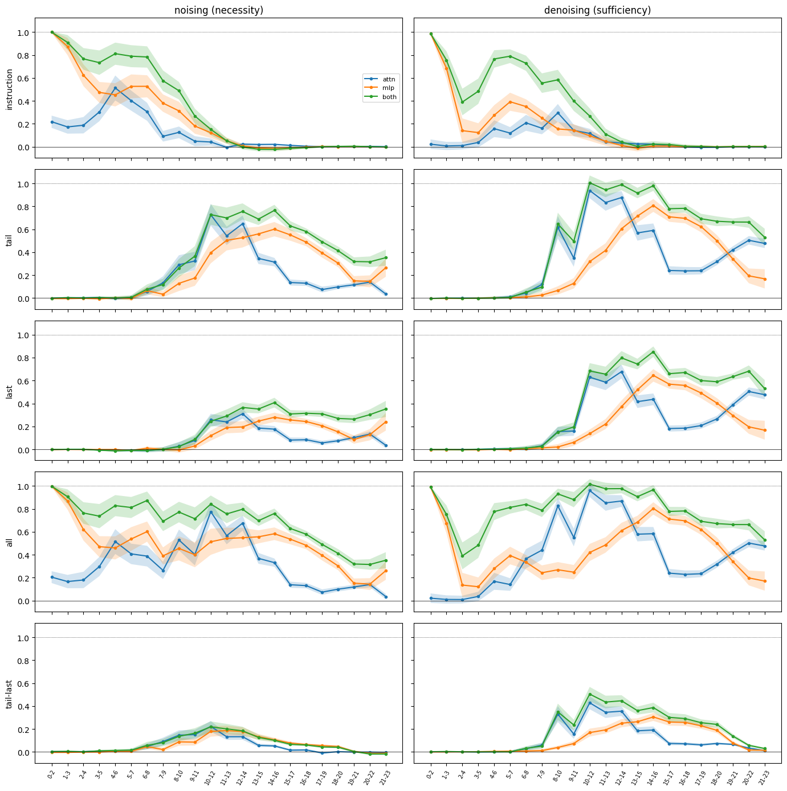
Fig 5b · Gemma-2B-it
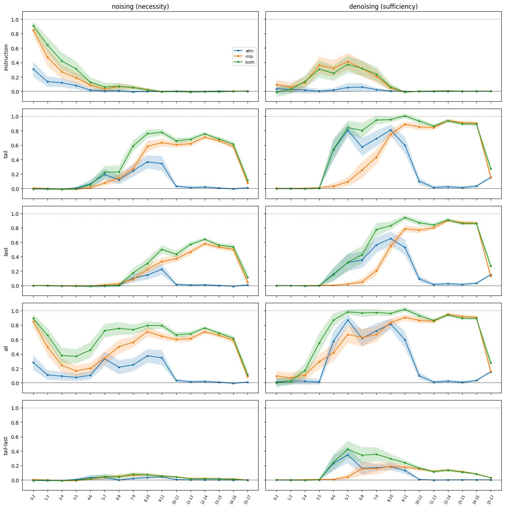
Figure 5. Three-layer window sweep, noising (left) and denoising (right), by position group (instruction, tail, last token, all, tail minus last, top to bottom), eval split: (a) Qwen, (b) Gemma. Table 1 gives the patch-and-read numbers; the bypass numbers are in Table 2.
Table 1. Patch-and-read in a suffix run (adversarial suffix, gate window, eval split). Clean tail attention or clean tail MLP outputs are pasted into the suffix run; entries are the fraction of the lost attention push, MLP push and refusal score that comes back (1 = fully restored, 0 = nothing).
| Pasted from the clean run | Qwen: attention push | Qwen: MLP push | Qwen: score | Gemma: attention push | Gemma: MLP push | Gemma: score |
|---|---|---|---|---|---|---|
| Attention | 1.00 | 0.84 | 0.83 | 1.00 | 0.97 | 0.80 |
| MLP | −0.32 | 1.00 | 0.47 | −1.84 | 1.00 | 0.63 |
| Both | 1.00 | 1.00 | 0.85 | 1.00 | 1.00 | 0.83 |
Theme 4 quotes the discover split; the eval values are close, and the Gemma attention entry for the MLP paste differs most (−0.84 discover, −1.84 eval).
The sweeps show the tail matters. They do not show whether the tail reads the instruction directly or through other tail positions, or which layers' reads the behaviour depends on. Two tests split those questions.
In-edge (activation level). Patch the instruction positions' attention and MLP outputs from the harmful run into the harmless run, freeze all of the tail's own earlier outputs at the clean values so no tail-to-tail relay is possible, and read the tail's attention output at layer L. The score is the share of the harmful-minus-harmless difference reproduced. A "free" version leaves the tail unfrozen. A share near 1 means the instruction-to-tail edge at that layer carries the whole difference.
Bypass (behaviour). The same instruction patch, plus freezing the tail's attention (or MLP) outputs in a block of layers at their clean values. Survival is the effect with the block divided by the effect without it. Near 0 means the block sits on the only route; near 1 means it is not needed. Freezing all attention must give 0, because instruction information can only reach the tail through attention, so that row is a tautology control.
Results. Qwen: the tail reads the instruction from layer about 1–3 on; the free share is about 1.0 from layer 5, and the frozen share is 0.5–0.95 at layers 3–10. Behaviour is decided in the gate: blocking tail attention at layers 10–14 leaves about 0 (discover) and 0.1 (eval) of the effect. Gemma: the free share only reaches about 0.5 from layer 4, and blocking tail attention at layers 6–11 leaves about 0.
What these tests do not show. The in-edge score is a share of an activation difference, not behaviour. The bypass freezes every head at all five tail positions, so it cannot say which heads matter. Both are total effects. The gate window also coincides with the window the heads were found in, so the bypass result is partly by construction; the window sweep is the independent evidence. For Gemma the bypass survival is only meaningful for the sender whose no-block effect is clearly non-zero (instruction layers 2–7: 0.37 discover, 0.59 eval). For senders 0–9 and 0–7 the no-block effect is about 0, so survival is a division by about zero and I do not report it.
Fig 6a · Qwen1.5-1.8B-Chat
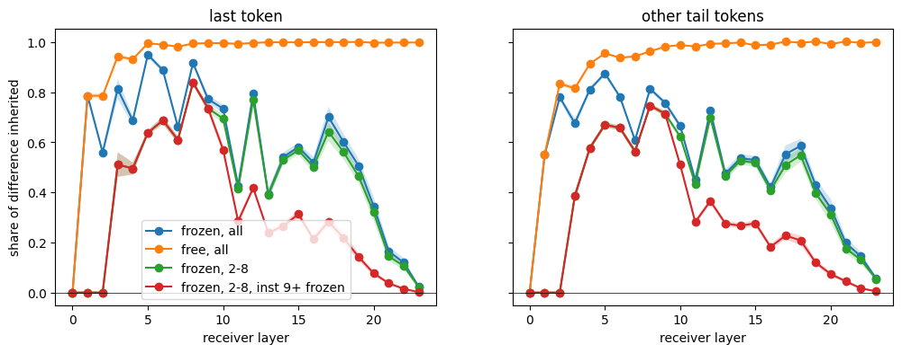
Fig 6b · Gemma-2B-it
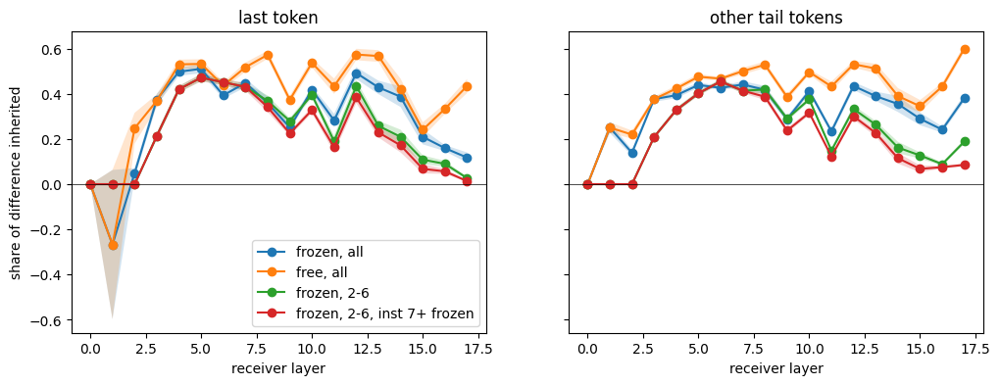
Figure 6. In-edge profile by receiver layer: share of the harmful-minus-harmless difference in the tail's attention output reproduced by the instruction patch, for the last token (left) and the other tail tokens (right). Free tail against frozen tail, and restricted senders: (a) Qwen, (b) Gemma. Table 2 gives the bypass survival numbers.
Table 2. Bypass test: survival of the instruction's effect when a block of the tail's outputs is frozen at the clean values, discover / eval. Qwen sender: instruction layers 0–12 (the other senders agree within about 0.02); Gemma sender: instruction layers 2–7, the only Gemma sender with a clear effect without a block.
| Frozen block | Qwen | Gemma |
|---|---|---|
| Attention in the gate | −0.01 / 0.10 (layers 10–14) | −0.07 / −0.01 (layers 6–11) |
| MLP in the gate | 0.31 / 0.38 (layers 10–14) | −0.04 / 0.13 (layers 6–11) |
| Attention and MLP in the gate | 0.03 / 0.12 (layers 10–14) | −0.09 / −0.02 (layers 6–11) |
| Attention after the gate | 0.72 / 0.78 (layers 15–19) | 0.96 / 0.94 (layers 12–16) |
| MLP after the gate | 0.30 / 0.30 (layers 15–19) | 0.03 / 0.03 (layers 12–16) |
| All attention (control, must be 0) | 0.00 / 0.00 | 0.00 / 0.00 |
| Effect without any block | 1.00 / 1.00 | 0.37 / 0.59 |
Gemma senders covering instruction layers 0–9 and 0–7 are left out: their effect without a block is about 0 (−0.06 and −0.04), so survival is a division by about zero.
The suffix sets in motion the same machinery, but where it breaks the machinery differs between the models. I used a ladder: no suffix, then position shift only, then 20 random tokens, then the adversarial suffix, and measured the fraction of the harmful-minus-harmless gap closed (discover split).
| Condition | Qwen | Gemma |
|---|---|---|
| Position shift only | 0.12 | about 0 |
| Random 20 tokens | 0.60 | 0.09 |
| Adversarial | 0.99 | 0.93 (eval 0.80) |
| Same tokens shuffled | 0.83 | 0.32 |
| Without brackets | 1.09 | 0.68 |
| Brackets only | 0.36 | −0.01 |
On Qwen much of the effect is generic (extra tokens) and the content adds the rest: ordinary English suffixes close 0.07 to 0.56 of the gap and the best of 20 random suffixes 0.89, against 0.99 for the adversarial one (Table 6b). On Gemma almost all of it needs the specific suffix: order matters (shuffling loses two thirds) and brackets contribute, but brackets alone do nothing. My bracket hypothesis was that the open brackets pull attention; it is false on Qwen and only partly true on Gemma.
Where the push is lost. Push is the projection of the top heads' output on the refusal direction, split by which position the attention reads from, at the last token's query (observational, no patching).
| Source | Qwen none → adversarial | Gemma none → adversarial (random) |
|---|---|---|
| Instruction | 4.55 → 3.82 | 2.27 → 0.62 (2.20) |
| Tail minus last | 4.17 → 0.40 | 1.22 → 0.40 (0.76) |
| MLP | 12.35 → 2.13 | 13.26 → 0.29 (11.44) |
Qwen: the push that arrives through the tail positions is erased (−90%), the instruction source barely moves. Mechanism: the heads' attention mass on the tail keys falls to the harmless level and the values shrink; push is mass times value. The swap test points to the keys, not the last-token query: restoring the clean tail keys recovers the lost mass, restoring the clean query does not (one head is query-driven).
Gemma: the instruction-source push falls 73%, the attention from the heads to the instruction collapses (one head 0.61 → 0.18) and the suffix tokens themselves gain +1.12 push. A random suffix leaves the instruction push intact (2.20) and cuts the tail push by about 40% with almost no behavioural effect, so across the seven suffix variants the instruction-source push tracks the behaviour and the tail push does not. The swap test is mixed: keys at some layers, the query at others, and two heads too noisy to read.
Gemma-specific note on the MLP push: it tracks the behaviour across variants (Spearman −0.96 on 7 points) but the late MLPs write the logit, so this is close to circular and I do not count it as evidence.
Fig 7a · Qwen1.5-1.8B-Chat
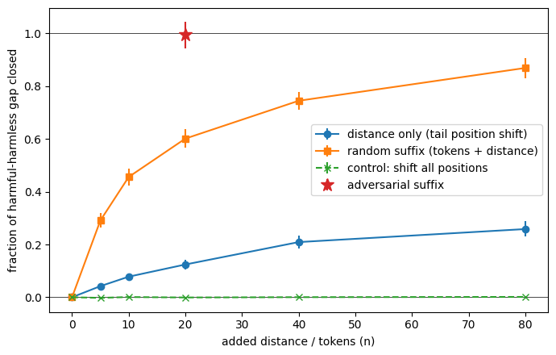
Fig 7b · Gemma-2B-it
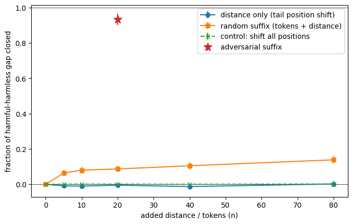
Figure 7. Fraction of the harmful-minus-harmless gap closed against added distance or tokens (position shift only, random suffix, shift-all control, adversarial suffix at 20 tokens): (a) Qwen, (b) Gemma.
Fig 8a · Qwen1.5-1.8B-Chat
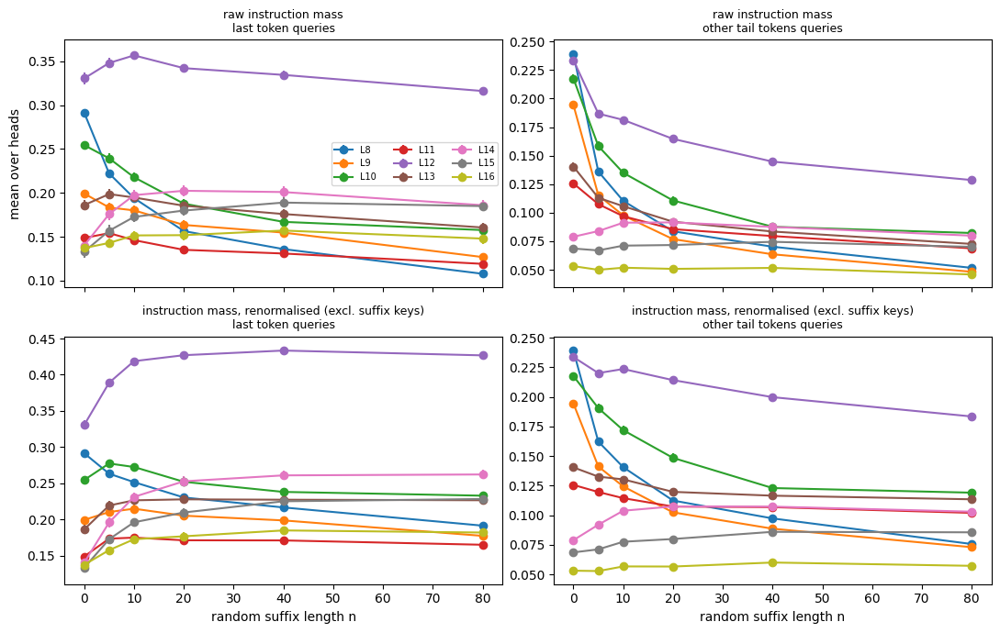
Fig 8b · Gemma-2B-it
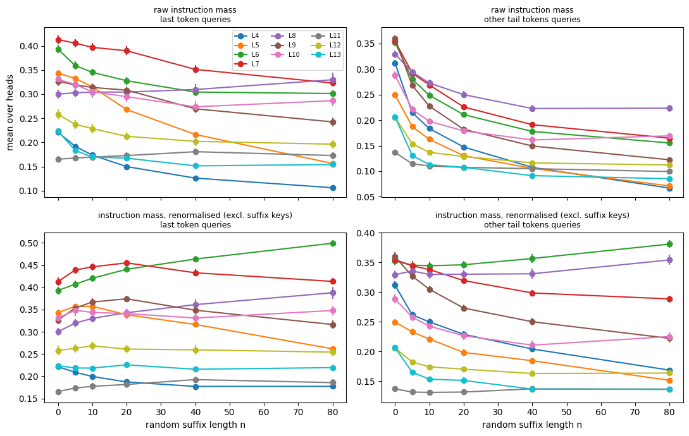
Figure 8. Attention mass from the template-tail queries to the instruction keys as a random suffix grows, raw and renormalised without the suffix keys: (a) Qwen, (b) Gemma. Table 3 gives the tail-key numbers; push by source is in the table in the text.
Table 3. Attention to the four tail keys at the last token's query, averaged over the top-8 heads (identities left out), eval split. Mass is the attention weight on those keys; value is what each key would write along the refusal direction; push is mass times value summed over keys, in projection units.
| Condition | Qwen: mass | Qwen: value | Qwen: push | Gemma: mass | Gemma: value | Gemma: push |
|---|---|---|---|---|---|---|
| Harmful, no suffix | 0.31 | 0.69 | 0.43 | 0.26 | 0.26 | 0.16 |
| Harmless, no suffix | 0.15 | −0.07 | 0.01 | 0.15 | −0.03 | 0.00 |
| Harmful, adversarial suffix | 0.09 | 0.18 | 0.03 | 0.19 | 0.05 | 0.03 |
| Harmful, random suffix | 0.12 | 0.32 | 0.08 | 0.20 | 0.20 | 0.09 |
On Qwen the mass falls to or below the harmless level and the value shrinks, so push collapses. On Gemma the mass on the tail keys falls only partly (0.26 to 0.19, still above the harmless 0.15); the value content is what is mostly lost.
Where I got stuck. I expected the attention hijack picture (the suffix pulls attention from the instruction) to be the story on Qwen, and argued against it: harmless prompts already put more attention on the instruction than harmful ones, so instruction mass cannot carry refusal. The numbers on Qwen agreed. On Gemma the same logic points the other way.
The structural findings (redundant decision sites, an attention-then-MLP order, an early instruction stage, MLP inheriting from attention) appeared in both models. The suffix mechanism, the strength of the generic suffix effect and the in-edge ceiling did not. With two models I cannot say which construction difference causes a difference, because family, size, depth, vocabulary, tokenizer and alignment recipe all move together. What I can do is name each candidate and say what it predicts.
| Difference observed | Candidate cause | What it predicts | Cheap test |
|---|---|---|---|
| Random suffix, second reading | Vocabulary and tokenizer: random Gemma tokens may be mostly multilingual fragments the model ignores | English-only random tokens act more like Qwen's | Draw from an English-only token set |
| Gemma late attention is a cutoff; Qwen's is a taper | Depth (18 vs 24 layers), or one shared key/value head vs many | A third model with a different head layout shifts the cutoff | Last-token residual and attention-freeze curves against relative depth |
| Instruction positions: denoising about 0 on Gemma | Scaled embedding stays in the residual when only component outputs are pasted. Confirmed | Pasting the full residual at an early layer restores the effect. It does: 1.00 up to layer 6 | Embedding-versus-output norms; full-residual denoising. Done on both (Tables 5 and 5b) |
| Suffix breaks different routes | Two separate GCG searches: the paper's authors' for Qwen (the stored suffix) and mine for Gemma, possibly with different objectives, lengths and targets | A suffix from my own GCG run on Qwen looks more like Gemma's | Run GCG on Qwen |
| Anything attributed to alignment type | Confounded with family, size and system prompt | Not testable with two models | A base versus chat pair of one model |
One explanation I considered and now do not rely on: Gemma's single shared key/value head would make all heads in a layer respond to a suffix together. In the swap test, heads in the same layer disagree (for example two heads at layer 6, two at layer 11), so the data does not support it. I have not tested it directly.
The point of the table is that a difference between models is only a result if I can say what in the construction would produce it, and what I would see if that were wrong.
After the first draft I ran the five checks I had listed as owed, on both models. On Gemma, two of them changed what I believed, and the second exposed a design problem in my own patching. On Qwen they leave the earlier claims standing, with two qualifications that come from checks 3 and 5.
Check 1: content versus scale in A1. The logit at the last position is w · x / R, where R is the RMS norm of the final residual, and R differs between the harmful and the harmless run. A component's harmful-minus-harmless share therefore mixes two things: what it wrote differently (content) and the same vector divided by a different R (scale). The embedding at the last position is the same token in both runs, so its content difference is exactly zero and any share it gets is pure scale. Table 4 shows that this is what happened.
| Component (shares of the gap) | Plain A1 (discover / eval) | Content | Scale |
|---|---|---|---|
| Embedding | 1.04 / 0.94 | 0.00 / 0.00 | 1.04 / 0.94 |
| Layer-0 attention | −0.85 / −0.78 | 0.05 / 0.03 | −0.90 / −0.81 |
| Layer-0 MLP | −0.13 / −0.11 | −0.05 / −0.03 | −0.09 / −0.08 |
| Layer-13 MLP | 0.15 / 0.14 | 0.16 / 0.15 | −0.01 / −0.01 |
| Layer-14 MLP | 0.49 / 0.48 | 0.49 / 0.48 | −0.01 / 0.00 |
| Layer-15 MLP | 0.25 / 0.24 | 0.25 / 0.24 | 0.00 / 0.00 |
| Layer-17 MLP | −0.15 / −0.12 | −0.15 / −0.12 | 0.00 / 0.00 |
| All components | 1.00 / 1.00 | 1.07 / 1.06 | −0.07 / −0.06 |
Table 4. A1 on Gemma split into content and final-norm scale (discover / eval). Shares of the harmful-minus-harmless score gap at the last position. Content plus scale equals the plain share by construction (checked in the code); the plain shares sum to the measured gap within 0.2%. Selected components; the full list is printed in the notebook.
The plain bar for layer-0 attention (−0.78) is a scale effect, and it cancels the embedding's +0.94. In the content view the late MLPs carry the difference (layers 13 to 15 add up to about 0.9) and layer 17 opposes it. On Qwen the split changes almost nothing. The plain shares sum to 1.00 of the gap on both splits, the content shares to 0.96 and 0.98, and the scale term is 0.03 and 0.02 (discover / eval). Layer-0 attention is zero to three decimals. The largest single component is layer-22 attention (0.18 / 0.15 of the gap, almost all content), followed by attention at layers 19 and 21 and MLPs at layers 15 to 23, so the sentence about writers spread over layers 15 to 23 with none above about 18% stands.
Check 2: what my patches were leaving in place. This check explains a result I had been carrying as a finding: denoising the instruction positions on Gemma gave about 0. My component patches paste attention and MLP outputs. The residual at layer k is the embedding E plus the outputs of the layers below k, so pasting outputs alone leaves the destination's own embedding in place. On Gemma that matters for two reasons, both visible in the norms. Gemma scales its embeddings: |E| is about 228 at the instruction positions, against a residual of about 24 from layer 5 on. And layer 0's outputs mostly cancel the embedding: their norms are 159 (attention) and 54 (MLP), and the residual falls from 228 to 62 after layer 0. From the averaged norms, the layer-0 output difference is almost anti-parallel to the embedding difference (cosine about −0.9). Pasting harmful outputs onto the harmless embedding therefore leaves an error of about 150 in norm, around five times the residual difference I meant to transfer (Figure B).
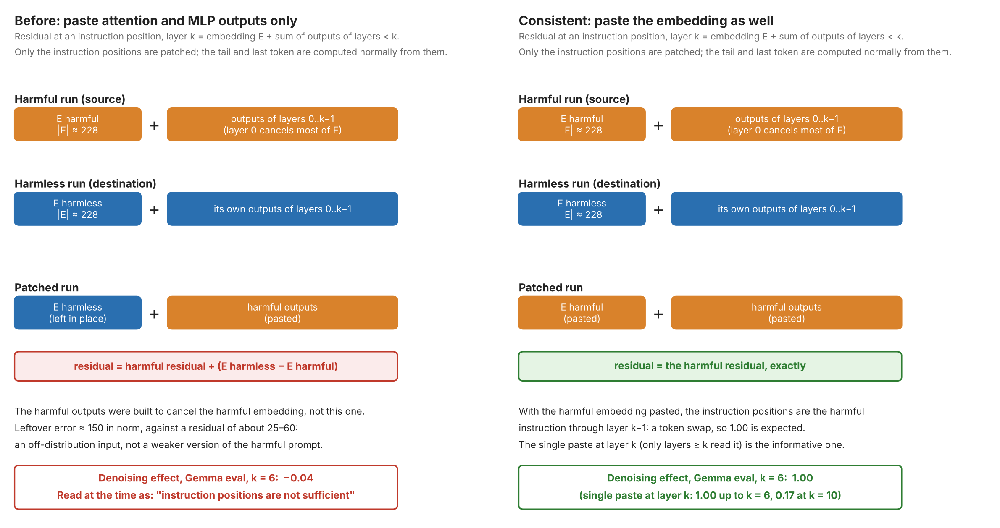
Figure B. What the instruction-position denoising patch put into the stream before (left) and now (right). Norms are Gemma's, averaged over 20 eval pairs; the effects are the eval values at k = 6.
| Layer k | Full residual at k | Outputs of layers < k only | Embedding + outputs |
|---|---|---|---|
| 0 (embedding only) | 1.00 / 1.00 | n/a | n/a |
| 1 | 1.00 / 1.00 | 0.10 / 0.07 | 1.00 / 1.00 |
| 3 | 1.00 / 1.01 | 0.07 / 0.01 | 1.00 / 1.00 |
| 6 | 0.98 / 1.00 | 0.02 / −0.04 | 1.00 / 1.00 |
| 7 | 0.88 / 0.93 | 0.02 / −0.04 | 1.00 / 1.00 |
| 9 | 0.72 / 0.76 | 0.01 / −0.06 | 1.00 / 1.00 |
| 10 | 0.13 / 0.17 | 0.00 / −0.08 | 1.00 / 1.00 |
| 13 | 0.00 / 0.00 | −0.08 / −0.18 | 1.00 / 1.00 |
| 17 | 0.00 / 0.00 | −0.49 / −0.62 | 1.00 / 1.00 |
Table 5. Denoising the instruction positions on Gemma by pasting the harmful state at layer k (discover / eval; effect as a fraction of the mean gap, standard error about 0.03). Full residual: resid_pre at layer k. Outputs only: attention and MLP outputs of layers below k, which is what my earlier patches pasted. Embedding + outputs: both, which makes the instruction positions the harmful instruction from layer 0 to layer k−1. That is the same as swapping its tokens (the k = 0 row), so 1.00 is expected by construction.
With the full residual the instruction positions are sufficient: the effect is 1.00 up to layer 6, falls through layers 7 to 9, and collapses between layers 9 and 10, by which point the tail has taken what it needs. The last column is not informative on its own. Embedding plus outputs below k makes the instruction positions the harmful instruction through layer k−1, which is the same as swapping its tokens (the k = 0 row), so 1.00 at every k is expected by construction. The first column is the informative one: a single paste of a consistent harmful state at layer k, which only layers from k on read. The "about 0" on Gemma was my design, not a property of the model, because outputs only is not a faithful copy of that state, and a faithful single paste at the same layers restores the whole effect up to layer 6.
What this does and does not touch. Affected: component patches at the instruction positions that include layer 0 or 1 outputs, which are the single-layer patches at layers 0 and 1, any three-layer window that includes them, and the bypass senders that start at layer 0 (the ones I had left out of Table 2 because their effect without a block was about 0). Not affected: patches that start at layer 2, such as the senders in Table 2 (layers 2 to 7), because they keep the harmless embedding and the harmless layer-0 and layer-1 outputs consistent and only add a difference of outputs; and every tail or last-token patch, because those tokens are identical in the two runs and so have the same embedding. On Qwen the check confirms that the embedding matters little (next paragraph and Table 5b): the outputs-only senders that included layer 0 (layers 0 to 12) restored the whole effect (1.00 in Table 2) and are valid as run.
Check 2 on Qwen. Qwen does not have the problem, and the norms say why. It does not scale its embeddings: the embedding norm is 0.7 at the instruction positions (eval split), against a residual of 3.2 after layer 0, 14 at layer 6 and 135 at layer 22, and layer 0's outputs (norms 1.3 attention, 2.6 MLP) add to the embedding instead of cancelling it. The embedding difference is 27% of the residual difference in norm at layer 1, 14% at layer 2 and under 10% from layer 4 on, so the harmless embedding that an outputs-only paste leaves in place is a small error. Table 5b shows it: outputs only gives 0.98 / 0.97 at k = 1 and 0.99 to 1.00 from k = 2 on, against 1.00 with the embedding pasted as well. My earlier Qwen component patches are valid as run.
| Layer k | Full residual at k | Outputs of layers < k only | Embedding + outputs |
|---|---|---|---|
| 0 (embedding only) | 1.00 / 1.00 | n/a | n/a |
| 1 | 1.00 / 1.00 | 0.98 / 0.97 | 1.00 / 1.00 |
| 2 | 1.00 / 1.00 | 0.99 / 0.99 | 1.00 / 1.00 |
| 4 | 1.00 / 1.00 | 1.00 / 0.99 | 1.00 / 1.00 |
| 8 | 0.99 / 0.99 | 1.00 / 1.00 | 1.00 / 1.00 |
| 10 | 0.82 / 0.86 | 1.00 / 1.00 | 1.00 / 1.00 |
| 11 | 0.62 / 0.70 | 1.00 / 1.00 | 1.00 / 1.00 |
| 12 | 0.48 / 0.58 | 1.00 / 1.00 | 1.00 / 1.00 |
| 13 | 0.04 / 0.21 | 1.00 / 1.00 | 1.00 / 1.00 |
| 14 | 0.02 / 0.17 | 1.00 / 1.00 | 1.00 / 1.00 |
| 16 | −0.02 / 0.06 | 1.00 / 1.00 | 1.00 / 1.00 |
| 20 | −0.01 / 0.01 | 1.00 / 1.00 | 1.00 / 1.00 |
Table 5b. The same denoising of the instruction positions on Qwen (discover / eval; effect as a fraction of the mean gap; standard error 0.06 on discover and 0.04 on eval where the effect is near 1). Columns as in Table 5. The outputs-only and embedding + outputs columns have no k = 0 entry because there are no layer outputs below layer 0.
As on Gemma, the last two columns are cumulative: they paste the instruction-position outputs of every layer below k, so the tail reads the harmful instruction at all of those layers and 1.00 at every k is expected. What they show on Qwen is that the two agree to within 0.03, which is the embedding check. The transfer curve is the first column: 1.00 up to layer 8, falling through layers 9 to 12 (0.48 / 0.58 at layer 12) and collapsing between layers 12 and 13 (0.04 / 0.21; the eval split keeps 0.17 at layer 14 and 0.08 at layer 15). In depth that is 54% on Qwen (layer 13 of 24) against 56% on Gemma (layer 10 of 18), so the tail has taken what it needs from the instruction positions by about half depth in both models, which supports theme 3.
Checks 3 to 5: suffix variability, the push table, behaviour.
| Measure (Gemma) | Discover | Eval |
|---|---|---|
| Adversarial suffix, fraction of the gap closed | 0.93 | 0.80 |
| Random, 10 seeds of per-prompt suffixes: mean (sd) | 0.09 (0.01) | 0.06 (0.01) |
| Random, 20 fixed suffixes: mean (sd) [range] | 0.09 (0.03) [0.04 to 0.20] | 0.06 (0.03) [0.02 to 0.18] |
| Benign English of the same length, 5 suffixes | −0.04 to 0.07 | −0.06 to 0.03 |
| Greedy refusal rate: harmless | 0.00 | 0.00 |
| Greedy refusal rate: harmful, no suffix | 0.97 | 1.00 |
| Greedy refusal rate: harmful + random | 1.00 | 1.00 |
| Greedy refusal rate: harmful + adversarial | 0.26 | 0.21 |
Table 6. Random-suffix spread, benign-suffix control and greedy refusal rate on Gemma (39 pairs per split; refusal by substring match on the first 48 generated tokens).
Check 3: Gemma's low random value is not a draw (sd 0.01 across seeds, 0.03 across fixed suffixes), and ordinary English of the same length does nothing either, so on Gemma extra tokens are not what closes the gap; the adversarial content is. The contrast with Qwen's 0.60 now has a stable side on both models (Table 6b).
Check 4: with the authors' direction (cosine with mine 0.59; their position −2, layer 10) the push table keeps its ordering on the discover split. The instruction source falls from 3.45 to 0.89 (−74%; mine −73%), the MLP push falls from 5.27 to −0.46, and a random suffix leaves the instruction push at 3.44. The MLP push is 2.5 times larger with my direction (13.26), so the magnitudes depend on the direction and the claims should be about the ordering.
Check 5: the greedy refusal rate falls from 0.97 to 0.26 (discover) and from 1.00 to 0.21 (eval) with the adversarial suffix, a relative drop of 73% and 79%, against 93% and 80% on the logit-gap proxy. The proxy is fair on eval and overstates on discover. The one adversarial completion I looked at on discover is a different task (translating an abstract), so the suffix can push the model into another task rather than into answering the request. I do not quote completions in this report. I have not graded the completions for harmfulness, so I do not call this a jailbreak.
Checks 3 to 5 on Qwen. The same code, run on Qwen (41 discover and 42 eval prompts).
| Measure (Qwen) | Discover | Eval |
|---|---|---|
| Adversarial suffix, fraction of the gap closed | 0.99 | 0.86 |
| Random, 10 seeds of per-prompt suffixes: mean (sd) | 0.60 (0.03) | 0.54 (0.03) |
| Random, 20 fixed suffixes: mean (sd) [range] | 0.62 (0.12) [0.46 to 0.89] | 0.54 (0.10) [0.41 to 0.77] |
| Benign English of the same length, 5 suffixes | 0.07 to 0.56 | 0.10 to 0.46 |
| Greedy refusal rate: harmless | 0.00 | 0.00 |
| Greedy refusal rate: harmful, no suffix | 1.00 | 1.00 |
| Greedy refusal rate: harmful + random | 0.32 | 0.31 |
| Greedy refusal rate: harmful + adversarial | 0.17 | 0.19 |
Table 6b. Random-suffix spread, benign-suffix control and greedy refusal rate on Qwen (same refusal rule as Table 6).
Check 3: Qwen's 0.60 is not a draw (sd 0.03 across seeds), so the contrast with Gemma's 0.09 holds with both sides stable. Two qualifications. The spread across fixed suffixes is much wider on Qwen (sd 0.12 and 0.10, against 0.03 on Gemma), and the best of 20 random suffixes closes 0.89 / 0.77 of the gap against 0.99 / 0.86 for the adversarial one. The adversarial suffix's margin over a random one is 0.39 and 0.32 on average but only 0.10 and 0.09 over the best random suffix. And ordinary English closes between 0.07 and 0.56, with three of five sentences at 0.50 or more on discover, so extra tokens are not the whole story but a suffix does not need to be adversarial or even random to do most of the work. That supports "much of the effect is generic on Qwen" and weakens any claim that the adversarial content is what matters there.
Check 4: with the authors' direction (position −2, layer 15; cosine with mine 0.88, much closer than on Gemma) the push table keeps its ordering on the discover split. The tail-minus-last route falls from 3.62 to 0.36 (−90%; mine 4.17 to 0.40, −90%), the instruction source barely moves (4.15 to 3.61, −13%; mine 4.55 to 3.82, −16%), and the MLP push falls from 11.71 to 3.14 (−73%; mine 12.35 to 2.13, −83%). A random suffix already takes the tail-minus-last push to 0.47 (mine 0.60) and halves the MLP push (mine 12.35 to 6.36), so on Qwen the loss of the tail route is not specific to the adversarial suffix, which fits check 3. Magnitudes differ by up to half between the two directions, so the claims should be about the ordering. The eval split is still owed.
Check 5: the greedy refusal rate falls from 1.00 to 0.17 (discover) and 0.19 (eval) with the adversarial suffix, a relative drop of 83% and 81%, against 99% and 86% on the logit-gap proxy: an overstatement on discover, close on eval, as on Gemma. Unlike Gemma, a random suffix alone also breaks refusal on Qwen: the rate falls to 0.32 and 0.31, a drop of 68% and 69% against 60% and 54% on the proxy. So on Qwen almost any 20 appended tokens remove refusal in about two thirds of prompts, and the adversarial suffix takes the rate to about 0.18, roughly half of what the random suffix leaves. I have not graded the completions for harmfulness, so I do not call this a jailbreak.
The corrections that changed the report most, in the order they happened. Each row is a belief I held, what the evidence said, and what I changed.
| What I believed | What I saw | What changed |
|---|---|---|
| Layer-14 MLP matters on its own, not through attention (H1) | The last token's own embedding carries no harmfulness, so information has to arrive by attention. Patching attention at layers 12–14 restored the MLP projection almost fully (5.27 against 5.32) | Dropped H1 as posed; the useful version is the inheritance test |
| The instruction tokens carry the whole story | The tail reads the instruction from layer about 1–3 on, and the instruction-source push barely moves under the suffix on Qwen | Reading starts early and persists; the decisive part is the gate |
| The suffix works by opening brackets that act as an attention sink. The Qwen suffix in the original paper has many open brackets, and I thought they were the reason it hijacks attention | Removing brackets raised the effect on Qwen (1.09) and lowered it only partly on Gemma (0.68) | Dropped; brackets are neither sufficient nor the mechanism |
| The tail positions before the last token are critical | Removing them alone costs about 19% (Qwen), 11% (Gemma) | Redundant routes with the last token |
| Joint above the sum of singles means AND | In noising it means redundancy; in denoising, mutual dependence | Rewrote the reading rules |
| Late attention might be negligible while the MLP still uses it | A2 already lets downstream respond | Late attention is dispensable as a total effect (on Gemma) |
| Position shift alone (RoPE distance) might explain part of the suffix effect | The shift-only test is out of distribution (a gap with no tokens in it); freezing it lowers instruction attention while the free run raises it | Treat it as an upper bound, not a mechanism |
| Layers 12, 13, 14 compose | A joint effect above the sum, but patched outputs are overwritten so patched layers cannot read each other | Stopped; called it a non-additive joint effect, not composition |
| Gemma's layer-0 attention writes −0.78 of the gap against refusal (A1) | In the same attribution the embedding at the last position, identical in the two runs, got +0.94. Split into content and scale, layer-0 attention's content is +0.03 and the rest is the final norm dividing each run by its own scale (Table 4) | The plain per-prompt A1 is replaced by the content version for the claim. The −0.78 was never a write. I should have asked what the attribution gives a component that cannot differ between the runs |
| Instruction positions on Gemma carry no sufficient signal: denoising them with attention and MLP outputs gave about 0 | The residual is the embedding plus those outputs, and my patch left the harmless embedding in place. Gemma's embedding is large (228 against about 24) and layer 0 cancels it, so the paste was off-distribution. Pasting the full residual gave 1.00 up to layer 6 (Table 5) | Retracted "about 0 on Gemma". Patches at the instruction positions that include layer 0 or 1 outputs need the embedding too; tail and last-token patches are unaffected because those tokens are identical in both runs. The habit to keep: write down what a patch leaves in place, not only what it moves |
What was not worth pursuing, and what I learned about prioritising. Reading back through the work with the advice on research taste and prioritisation in Neel Nanda's post (My Research Process: Understanding and Cultivating Research Taste) in mind, most of my experiments did not maximise information gain or understanding, or did not answer the "so what?". The ones I dropped or parked, and why:
| What I considered | Why it was not worth it, or not yet |
|---|---|
| Whether layers 12, 13 and 14 compose | A rabbit hole with low value for the goals. A joint effect above the sum cannot separate composition from the patched layers being overwritten, so I stopped and ran the window sweep instead. |
| A model without rotary position embeddings, to separate suffix distance from content | Parked: library support is uncertain, and I have no chat model with refusal behaviour to check it on. |
| A single-layer neuron analysis of the final MLP, and subspace methods | Parked behind a time cap. The MLP comes back as the next step, this time with a kill criterion set before running. |
| A reasoning model such as DeepSeek-R1 | Future work: its thinking block breaks the first-token and template-tail assumptions, and the distilled versions are not RL-trained. |
The change I am making is to write down, before running anything, what result would change my next step and what the "so what" is. The MLP questions in the next section are written that way.
Limits of the evidence.
Two models, one suffix each, 39–42 prompt pairs per split; standard errors are over prompts only.
The behaviour metric is a first-token logit gap, not a generated refusal or an attack success rate.
Every patching result is a total effect. Heads, and which heads, are not identified.
The random rung of the ladder now has its spread on both models (10 seeds: sd 0.01 on Gemma, 0.03 on Qwen; 20 fixed suffixes: sd 0.03 on Gemma, 0.12 on Qwen). On Qwen the spread across fixed suffixes is wide enough that the adversarial suffix's margin over the best random suffix is only about 0.1 (Table 6b).
Direction choice: the algorithm and the paper's choice differ on both models, so push and projection numbers are conditional on mine (cosine with the paper's direction 0.88 on Qwen, 0.59 on Gemma).
The heads and the gate window are partly chosen by construction (found below the direction layer); the sweeps and bypass are the independent evidence.
Alignment type (fine-tuning against preference optimisation), attention layout and depth are confounded with model family, so none of them is tested here.
The push table with the authors' direction was recomputed on the discover split only.
The Gemma component patches at the instruction positions that include layer 0 or 1 outputs (the single layers 0 and 1 and any window containing them) were run without the embedding and are not valid as run. They need redoing as single pastes of the residual, or dropping from the claims.
Refusal rates are by substring match on the first 48 generated tokens, and I have not graded the completions for harmfulness, so I do not call the suffix effect a jailbreak.
The next step is the MLP, which I think is under-studied here. The attention story ends at a gate; what happens after it is mostly MLP, and I do not yet know what the MLP reads, or whether a few neurons carry it. A neuron-level paper on refusal already exists (a single MLP neuron whose suppression bypasses refusal in Qwen3 and Llama-3.1, with several sufficient neurons in some models), so my contribution would be what feeds the neurons and whether the picture holds in these models. Three questions, each with a kill criterion set before running:
Sparsity. How many gate-band neurons are needed for half of the effect, against random neurons of the same count? If it takes more than about 5% of the neurons, the answer is "distributed".
Input. Do the neurons read what attention wrote? Paste the clean attention into the suffix run and see whether their activations return.
Output. Do their output weights align with the refusal direction and with the unembedding of the refusal token?
Two results from the last two weeks bear on these questions. Cammarata (2026) argues in a working-hypothesis essay that most neurons are already interpretable, with a preliminary audit of Qwen3-32B in which about nine in ten neurons examined had one main job. Shabalin and Piotrowski (2026) find that across 13 open-source transcoders many late-layer features are neurons in disguise, and that only those have a stable correspondence with the underlying MLP. I do not have a stance on Cammarata's results, which are preliminary and await independent replication, but in light of this recent work I am excited to see what comes of the MLP analysis.
The second line of work is across models: last-token residual patching by layer and a cumulative attention freeze from layer L onward, plotted against relative depth. That tests the account in theme 2 (attention routes, then MLP writes) with no direction, GCG search or head scan, and it needs only more models. I have not run either yet.
The third is the formation question, which is why a single refusal direction exists at all, and how the chat-minus-base weight change relates to it. That is the next post in the series and is not part of this report.
Arditi et al. (2024). Refusal in Language Models Is Mediated by a Single Direction. The paper whose setup I replicate.
Zou et al. (2023). Universal and Transferable Adversarial Attacks on Aligned Language Models. The GCG attack used to find the Gemma suffix; the replicated paper's authors used it for the Qwen suffix.
Kazemi, Chegini and Safi (2026). A Single Neuron Is Sufficient to Bypass Safety Alignment in Large Language Models. The neuron-level precedent for the MLP work.
Nanda (2025). My Research Process: Understanding and Cultivating Research Taste. AI Alignment Forum, 1 May 2025. The advice on prioritisation behind the section on what was not worth pursuing.
Cammarata (2026). Neural Networks Are Already Clean. Goodfire, 15 October 2026. A working-hypothesis essay arguing that most neurons are interpretable; a companion technical paper is forthcoming. Cited for context; I take no position on its results.
Shabalin and Piotrowski (2026). Comparing Sparsified MLPs and Transcoders: Many Transcoder Features Are Neurons in Disguise. Finds that many late-layer transcoder features align with single MLP neurons and that only these are stable across training runs.
Models: Qwen1.5-1.8B-Chat, Gemma-2B-it.